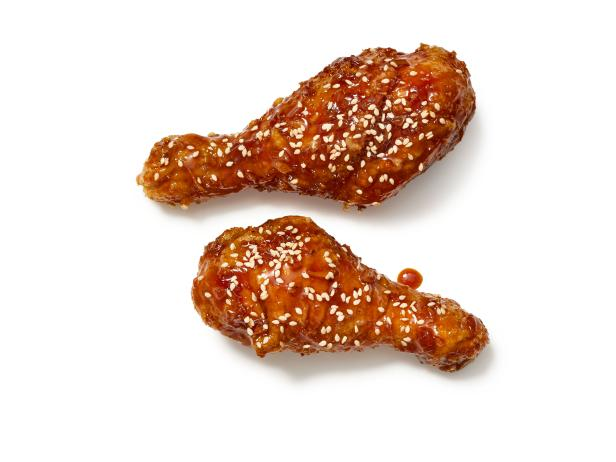

Korean Fried Chicken

Description
This recipe shows how Erwann Heussaff created his Korean Fried Chicken
in his YouTube channel.
Ingredients
Frying Powder
- 1 cup cornstarch or potato flour
- 1 cup flour
- 1 tbsp baking powder
- 2 tbsp salt
- 2 tbsp garlic powder
- 2 tbsp onion powder
- 1 tsp msg (optional)
Chicken
- 1 x 1.5-2.5kg whole chicken or equivalent in other chicken cuts
- 1 cup mlik
- 1 cup Frying Powder for batter
- 1 cup Frying Powder for dipping
Seasoning
- 1/3 cup of vodka
- 1.5 tbsp of fine salt
- 2 tsp of pepper
Red Sauce
- 1/2 cup of water
- 1/3 cup ketchup
- 1/4 cup gochujang
- 3 tbsp dark soy sauce
- 1/2 cup minced garlic
- 3 tbsp fine red pepper powder
- 1/3 cup brown sugar
Instructions
- Season the chicken parts with salt, pepper, and vodka.
Cover and place in the fride for at least 6 hours.
- Prepare the coating by mixing flour, salt, garlic powder, onion powder, baking powder
and cornstarch. Set aside.
- For the red sauce, heat up a pan and combine water, ketchup, gochujang, soy sauce
garlic, red pepper powderr, and brown sugar. Simmer and adjust the heat according to your
taste.
- Coat the chicken with a mixture of milk and frying powder. Dip the chicken
in the dry frying powder.
- Deep fry at 150C for 10 minutes. Rest for 15 minutes.
- Heat oil to 175C and deep fry for a second time. Drain the oil and let it rest for 15 minutes.
- Serve it with plain coating or mix it with the red sauce top with roasted sesame seeds.